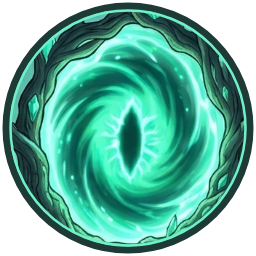

100%
Animaciones
Sprites (0)
Ctrl+click o Shift+click para seleccionar varios.
0 seleccionados
app.js (un <script type="module">). La causa
casi siempre es abrir este archivo con doble clic (file://…) en vez de servirlo por
HTTP — los navegadores bloquean los módulos ES por CORS en ese caso. Sirve la carpeta con un
servidor local (ver "Running locally" en ARCHITECTURE.md) y recarga.

Ctrl+click o Shift+click para seleccionar varios.
Comportamiento de un enemigo de hoja de sprites: rellena su EnemyConfig y expórtalo —
importable con Tools ▸ RedMagic ▸ Import Config... en Unity. Los enemigos
por partes se hacen enteros (cuerpo y comportamiento) en 🧬 Enemy Studio.
Define un proyectil o un VFX como una entidad reutilizable de la biblioteca, con su arte y (si
es proyectil) su ProjectileSpec. La configuración se guarda sobre la misma entrada
que ya creaste en la pestaña Sprites, así que el libraryId que usan los enemigos
y los ataques de jefe es el mismo que lleva estos números.
Monta un jefe completo: animaciones del cuerpo (de la pestaña Sprites), movimiento, avisos,
ataques con su arte y fases. Los tipos de ataque y sus campos vienen de Unity. Exporta un
.zip y en Unity: Tools ▸ Web ▸ Import Config… ▸ Importar jefe completo.
Efectos hechos con parámetros en vez de dibujados. Elige uno, ajústalo y guárdalo: queda en la biblioteca como un proyectil o un VFX más.
docs/tareas/todo.json (Claude lo lee). Clic en una tarea para abrirla: descripción, pasos, lanzarla.Propuestas para aprobar: enemigos, proyectiles, efectos y sonidos. Skill design-proposals. Clic: selecciona esa tarjeta (Ctrl / Mayús + clic: varias, Esc: ninguna);
imagen de Gemini: clic en su tarjeta y Ctrl+V; ⤢ para verla en grande, ▶ para oírla.
Diseño aceptado → ▶ Montar (skill make-enemy) → probar en Unity → aprobar o apuntar pendientes. Clic en un enemigo para abrir su ficha.
Todo lo guardado: enemigos, proyectiles y VFX creados en la pestaña Sprites (con su hoja de sprites y, si ya pasaron por su Creator, su config enlazado) más los jefes montados en Boss Creator, que no tienen hoja propia y se apoyan en un enemigo base.
Pinta roca y plataformas en la cuadrícula. 1 celda = 1 unidad de Unity = 40 px. En Unity: menú EditorNiveles ▸ Importar nivel…
Alto máximo 75. Lo pintado se queda pegado abajo a la izquierda (como en Unity). El marco de 1 celda es siempre roca.
Se guarda en Assets/Levels/Bocetos/<nombre>.levelsketch.json. También puedes arrastrar un .json aquí.
Clic izq. pinta · clic der. borra
Rueda: zoom · botón central o Espacio+arrastrar: mover
Vista previa: rueda / WASD / flechas mueven la cámara
B pincel · R rectángulo · G relleno · E borrar · 1–9 tipo · [ ] grosor · P vista · F ajustar · Ctrl+Z / Ctrl+Y
Fondos de parallax por capas (1 = la más lejana). Elige una capa y pega una imagen con Ctrl+V, arrástrala o usa «Subir imagen…».
Guardado en la Biblioteca se puede seguir más tarde y ya sale en 🧱 Niveles. Para el juego: «Exportar a Unity» y en Unity EditorNiveles ▸ Importar fondo…
Mueve al jugador con WASD o las flechas (vuela); R lo baja al suelo. La cámara es la del juego: 20 unidades de alto.
Qué pestañas se ven y en qué orden (Alt+1…9 sigue este orden). Se guarda en este navegador.
1. Importa piezas. 2. Selecciona una o varias y asígnales tipo. 3. Traza colisiones y compón el mapa.
Shift+click selecciona varias piezas.
Selecciona una pieza de la biblioteca.
Clic para colocar una pieza. Shift+click selecciona varias. Arrastra la selección para moverla, o sus esquinas para redimensionar (Shift+arrastrar = proporcional). Espacio+arrastrar o botón central mueve el lienzo.
Sin selección.
Click añade punto · Enter/click-derecho termina · Z deshace · Esc cancela.
Ctrl+click o Shift+click sobre una pieza para seleccionar varias.
Los nombres de la lista son el vocabulario fijo que espera Unity para el tipo
seleccionado arriba (enemigo: EnemyAnimation.cs; proyectil: Awake/Move/Impact;
VFX: Spawn/Loop/End) — elige uno para no arriesgar una falta de ortografía, o
"Personalizado…" para una animación propia (ej. Attack2) que no forma parte de
ese vocabulario.
Cada fila detectada por posición (de arriba a abajo) se convierte en los frames de una animación, en el mismo orden izquierda→derecha que usa el resto de la herramienta. Elige a qué animación va cada fila, o "Sin asignar / omitir" para dejarla como está.